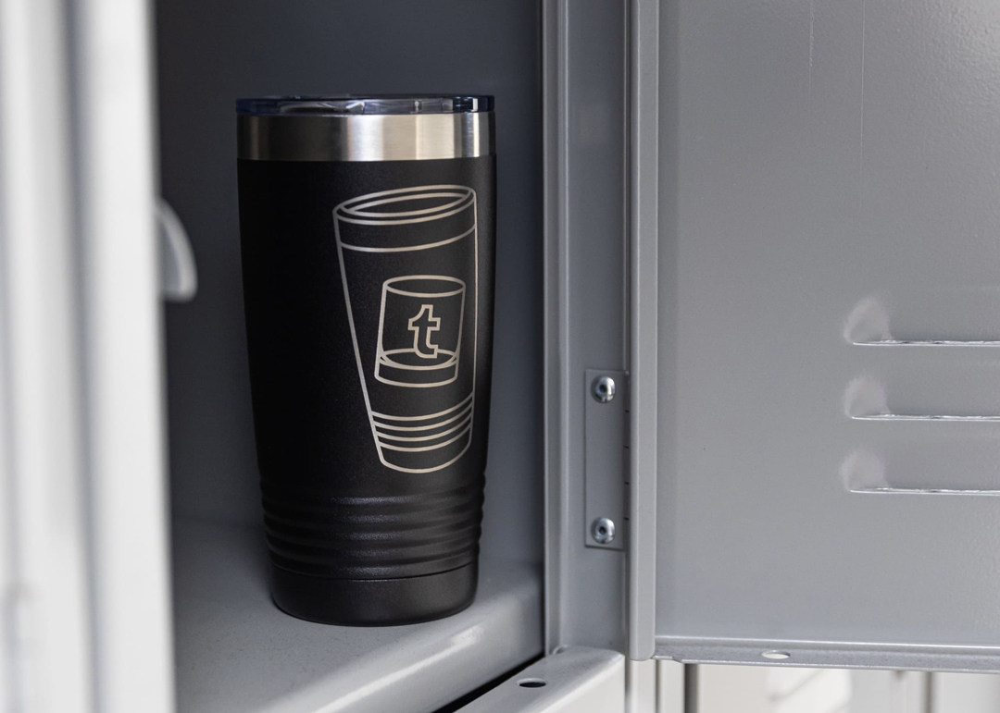
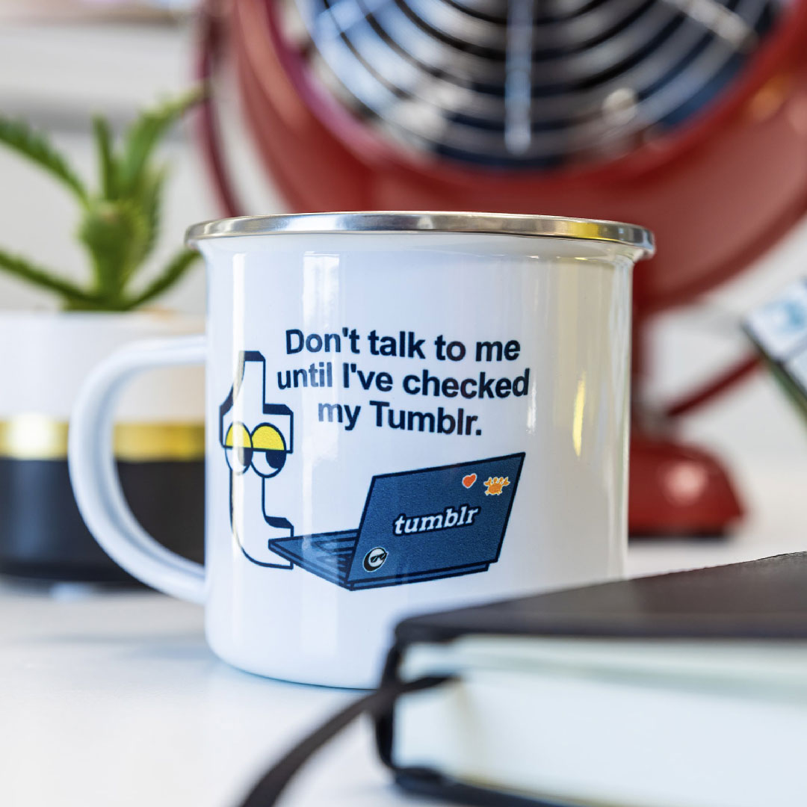
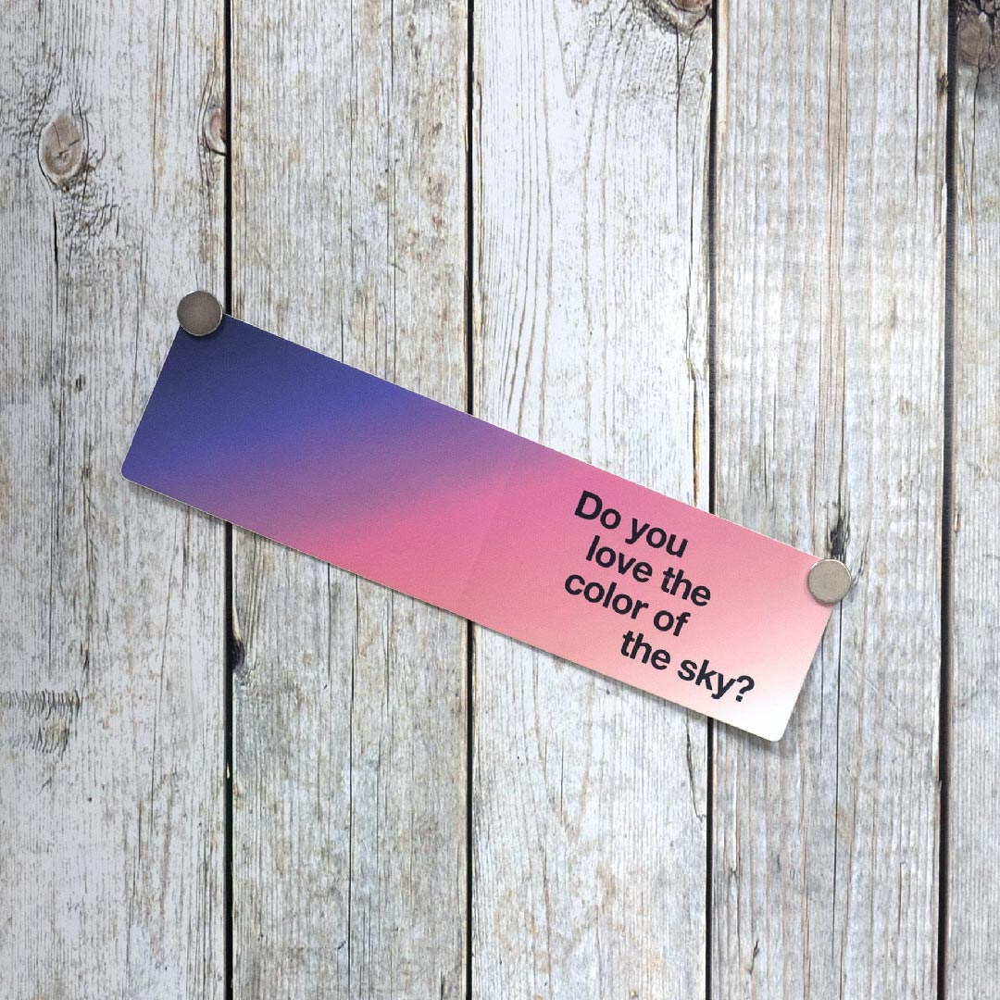
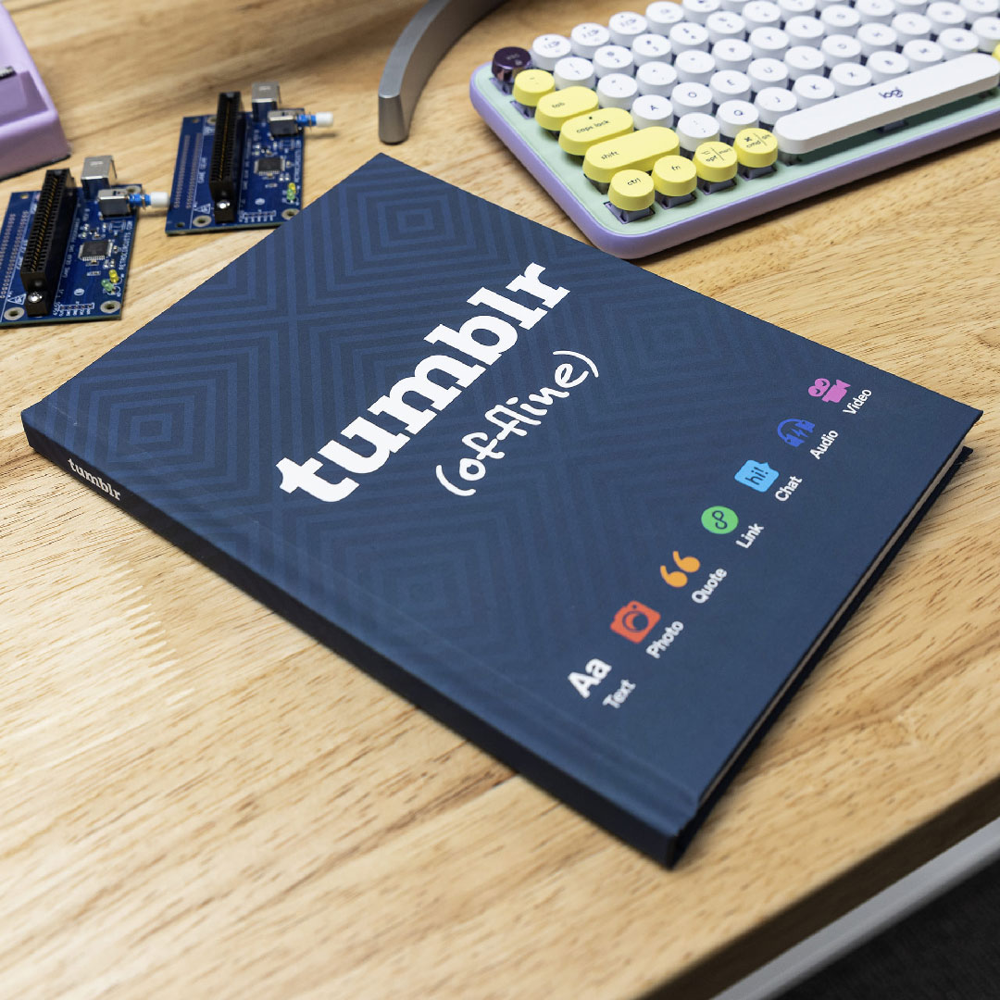
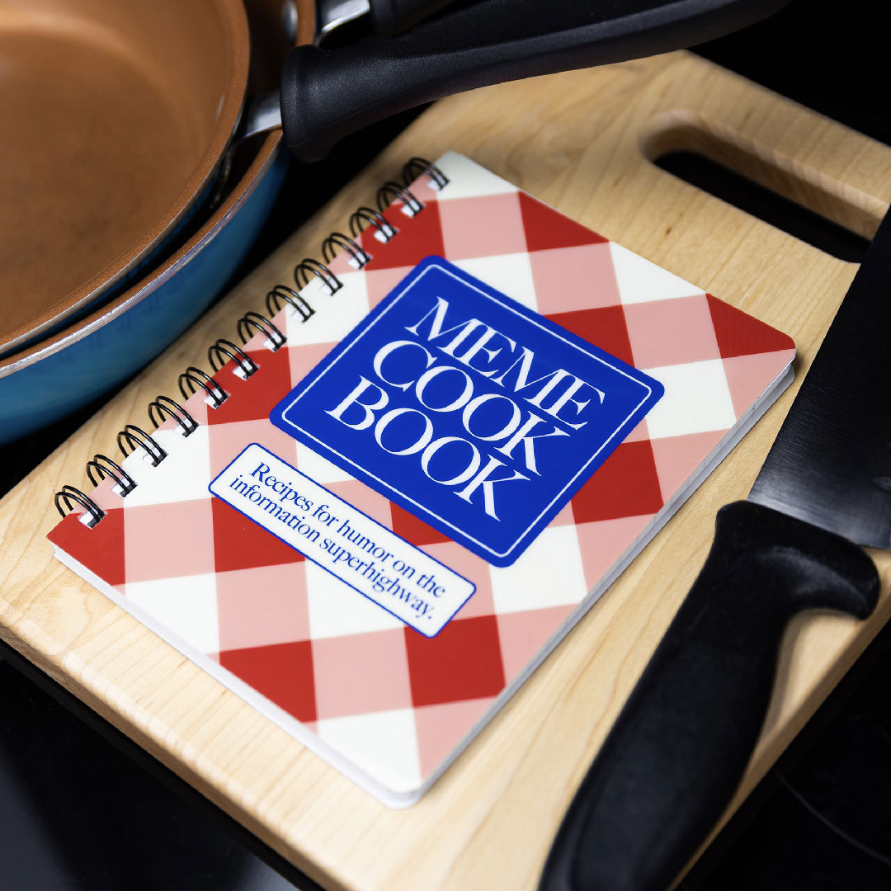
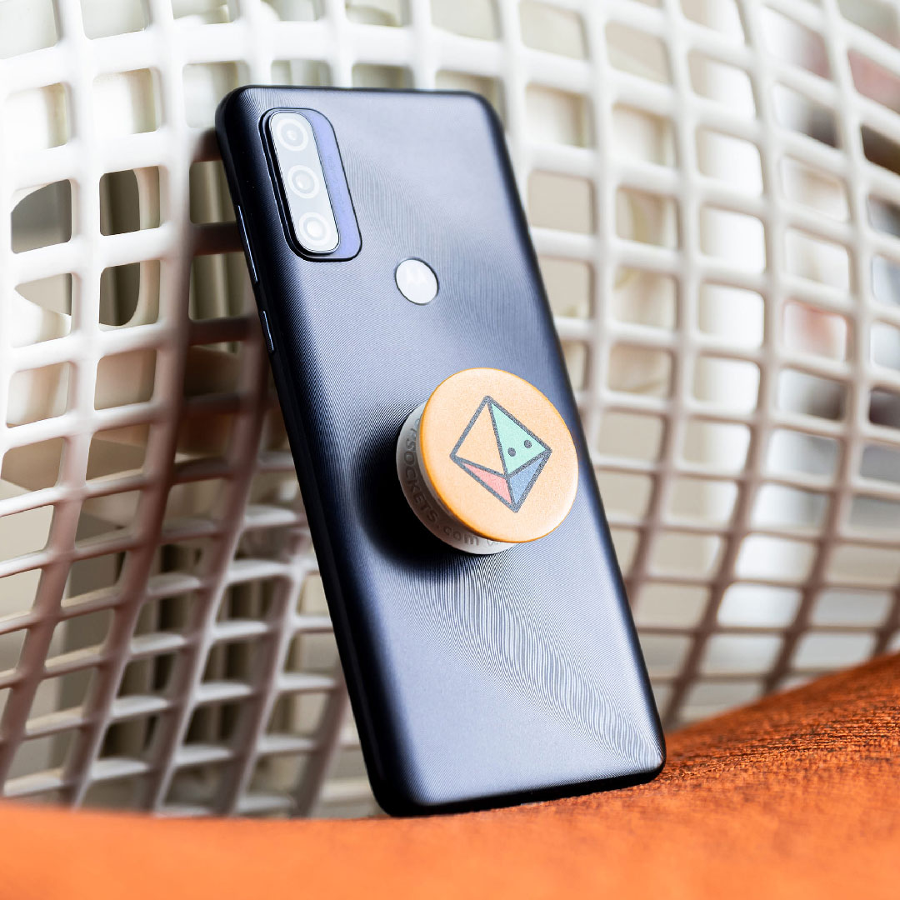
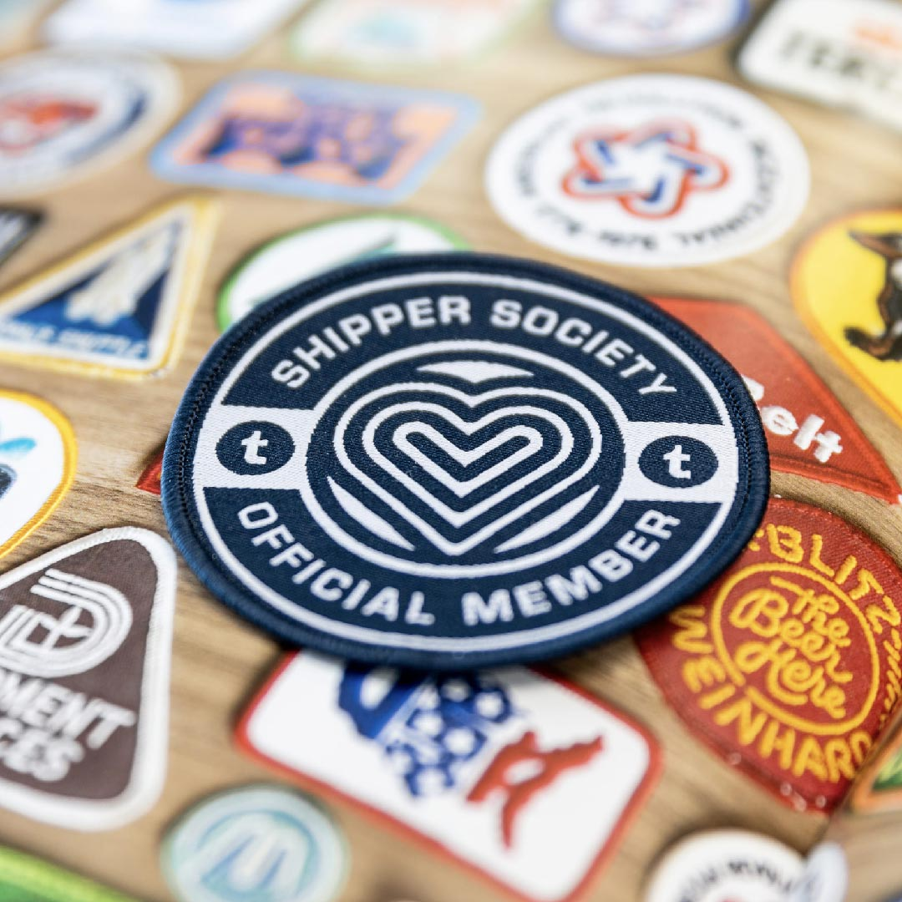

mattcolewilson.com → the easiest way to blog
Back to top ⤴
Made by human labor. © 2026 All Rights Reserved

Back in 2023, I had the immense honor of designing a few pieces of official Tumblr merchandise. Massive thanks to Nick Hamze for the hookup. We've collaborated a lot over the years and he ended up in charge of Tumblr merch for a bit. This wouldn't have happened without him. Thanks, Nick!
Making this stuff was a surreal experience, as I had been a regular Tumblr user for over a decade at the time. (And I'm still going strong today.) The best piece I made is arguably the "Tumblr tumbler tumbler tumbler" that you see here. But my personal favorite was the "I'll Never Stop Posting" bumper sticker that never made it to print.
Oh, and shoutout to whoever made the Tumblr sweatpants. I regret not buying a pair.

"Don't Talk To Me" Camp Mug
Color of the Sky Bumper Sticker
"Tumblr Offline" Journal
Meme Cookbook
Default Avatar Pop Socket
Shipper Society PatchBack to top ⤴
Made by human labor. © 2026 All Rights Reserved